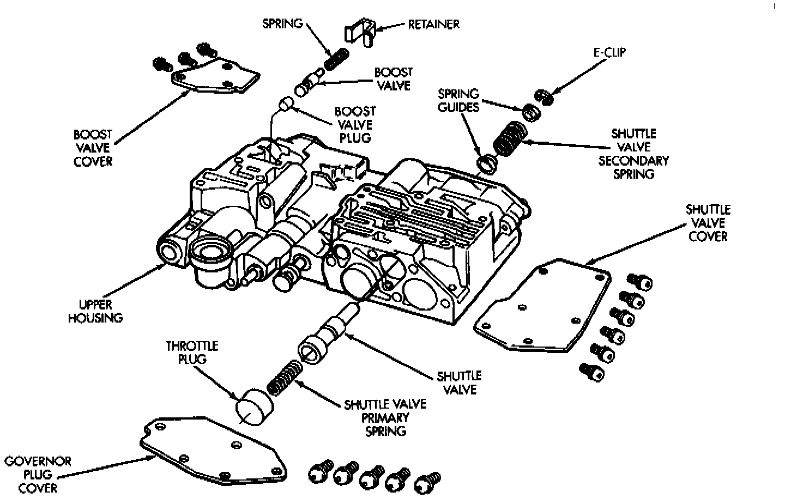
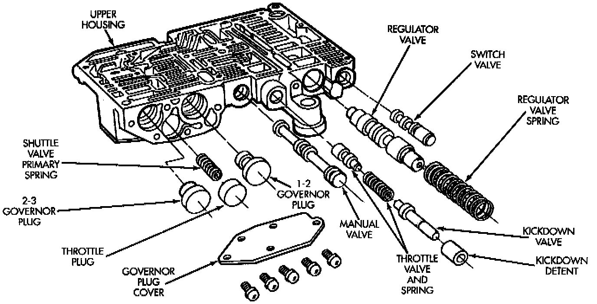
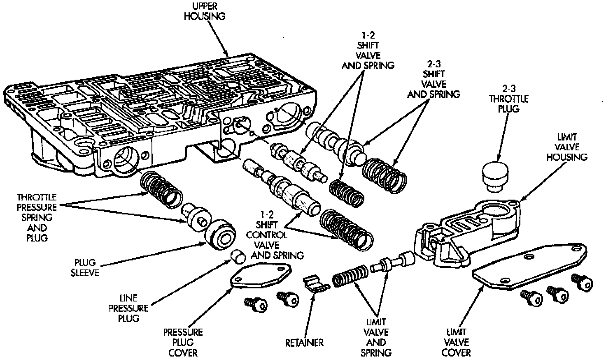

Upper Housing Valve and Plug Assembly
Shuttle And Boost Valve Components:

Upper Housing Control Valve Locations:

Upper Housing Shift Valve And Pressure Plug Locations:

Refer to figures to perform the following steps.
1. Lubricate valves, plugs, springs with clean transmission fluid.
2. Assemble regulator valve line pressure plug, sleeve, throttle plug and spring. Insert assembly in upper housing and install cover plate. Tighten cover plate screws to 4 Nm (35 inch lbs.) torque.
3. Install 1-2 and 2-3 shift valves and springs.
4. Install 1-2 shift control valve and spring.
5. Install retainer, spring, limit valve, and 2-3 throttle plug from limit valve housing.
6. Install limit valve housing and cover plate. Tighten screws to 4 Nm (35 inch lbs.).
7. Install shuttle valve as follows:
a. Insert plastic guides in shuttle valve secondary spring and install spring on end of valve.
b. Install shuttle valve into housing.
c. Hold shuttle valve in place.
d. Compress secondary spring and install E-clip in groove at end of shuttle valve.
e. Verify that spring and E-clip are properly seated before proceeding.
8. Install shuttle valve cover plate. Tighten cover plate screws to 4 Nm (35 inch lbs.) torque.
9. Install 1-2 and 2-3 valve governor plugs in valve body.
10. Install shuttle valve primary spring and throttle plug.
11. Align and install governor plug cover. Tighten cover screws to 4 Nm (35 inch lbs.) torque.